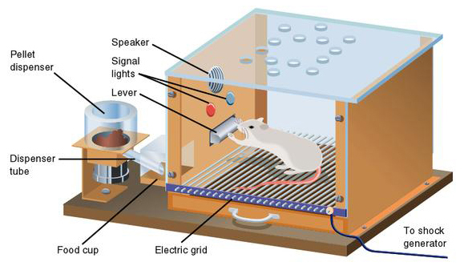
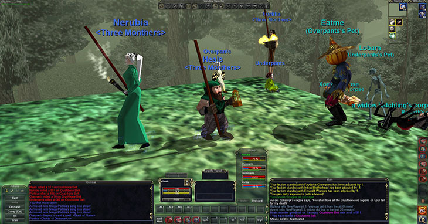

Gaming Addiction
The realm of technology is growing exponentially relevant amongst individuals of all backgrounds in contemporary society. However progressive, an outstanding percentage has become rather dependent if not addicted to online video games without the purpose of amusement nor entertainment. This dependancy is one of the most prevalent issues affecting populations worldwide—particularly adolescents and young adults. Players are prone to lose themselves in the parallel world for virtual awards and pseudo-status at the expense of debilitating consequences in the real world. “In late 2017, the World Health Organization (WHO) announced that in the upcoming edition (11th Revision) of the International Classification of Diseases (ICD), gaming disorder will be identified as a new disorder”.(Parekh 2018) The phenomena conjures similar events of an addiction such as impaired self-control and withdrawals. Software developers design video games by manipulating the basic principles of behavioural psychology through creating contingencies, and especially incorporating potent social aspects in which the player virtually inhabits. As gaming softwares and devices evolve, the fundamentals of psychology remains constant.Software developers aim to congregate consumers and, most importantly, maintain the anticipation, thus delivering a carefully engineered product. The answer lies within how humans interact and negotiate with all aspects in everyday life: psychology. Utilizing psychology as the framework behind the product comes in handy because of its relevancy. A behavioral approach that has been applied and is familiar to numerous game designs is Burrhus, B.F. Skinner’s Operant Conditioning theory: one’s behaviour is shaped by the consequences of its environment. An important contribution to Behaviourism. In other words, if the behaviour is rewarded, it is most likely to be repeated. Similarly, if the behaviour is punished, it will be put to a halt.
This conclusion originates from a series of conducted observations known as the Skinner Box experiment. The experiment consisted of a glass box equipped with a lever that is connected to a pellet dispenser, starring a laboratory rat. Within its limited surrounding, the rat learns that pressing the lever distributes food pellets. This reward-system is repeated until the rat is conditioned and associates the lever as a means of nourishment, making the action instinctual. The latter is defined as reinforcement. To further the experiment, The most effective pattern in which the response rate is fast and constant and where the extinction rate is slow is the variable ratio reinforcement: the lever does not have a fixed schedule or rule of rate to which the food pellets are dispensed. The lever does not dispense pellets whether it is pressed five times, six times, or after 5 minutes—the rate is undetermined, it is random. Due to unpredictability, the rat’s behaviour persistently pressing the lever is difficult to extinguish.
This concept is emulated in game design. For instance, in MMORPGs (massively multiplayer online role-playing games) such as Ever Quest, players learn that they must assassinate mobs in reward of points to proceed to the next level. They’re taught how to source capital for goods. Eventually, the basics of the reward-system is understood though quickly becomes trivial. Superior equipment motivates the player to execute elaborate tasks. Simple equipment becomes obsolete. The higher the value of the reward, the more complex and time-demanding the task. That is where the variable ratio reinforcement introduces itself in its design. “The player does not know how many actions are required this time, just the average number from previous experience”, said John Hopson. The unpredictability is engrossing enough to stay in the game. Since the player has grown invested in their virtual possessions, and are compelled by the idea of proceeding to the next level for greater value, they are most likely to invest longer hours in the virtual world in which they inhabit.
Gaming developers have merged strong social aspects in the software’s design that facilitates or requires its participants to communicate with other players online. For instance, it is common for MMORPGs to have an aid and supplying system within guilds. In EverQuest, a participant’s character may play the role of a Provisioner: produces a variety of food and drinks that benefits those who consume them. In Final Fantasy XIV, characters have specific duties when entering combat in dungeons. The user may enter combat as conjurer (healer), lancer (inflicting damage per second), the list goes on. Similar to Final Fantasy XIV and other MMORPGs with battle elements, League of Legends, a five-man team game, offers distinct roles within the combat zone. The combat zone is designed with three lanes. Players have roles within these lanes called top-lanner, mid-lanner, bottom-lanners (a duo team that includes an assassin accompanied by a support character), and a jungler (they roam around the arena helping lanes when needed). In order to elevate the odds of victory, players must communicate strategies, and suggestions. These strong social significances are important because, not only does it benefit the game’s appeal, it may also influence the player’s esteem as it boosts the individual’s sense of adequacy and belonging. Online video games are relatively designed for its users to interact with each other to attain goals. Nicholas Yee asserts that “High-stress situations inherent in the game also helps build trust and bonds between players” (Ariadne Understanding MMORPG Addiction 9). In MMORPGs, the anonymity chat environment facilitates self-disclosure facilitating its users to confess personal issues to online friends that are difficult to disclose in “real life”. If compensating a void from the real world with online interaction isn’t the case, a network of real life friends who mutually play the same game encourages users to play. It may also cause a chain-reaction for players’ desire to catch up with their friend’s level. They may also want to schedule times to play together. The online world perpetuates an immersive nature.
- Parekh, Ranna. Internet Gaming, www.psychiatry.org/patients-families/internet-gaming.
- "The Norrathian Scrolls: A Study of EverQuest - (MMORPG Research, Cyberculture, MMORPG Psychology, Demographics, Statistics, Psychology, Charts, Addiction, Gender Differences, Gender Bending, Relationships, Romance, Guilds, Download)." The Norrathian Scrolls: A Study of EverQuest - (MMORPG Research, Cyberculture, MMORPG Psychology, Demographics, Statistics, Psychology, Charts, Addiction, Gender Differences, Gender Bending, Relationships, Romance, Guilds, Download). N.p., n.d. Web. 27 Mar. 2017.
- "Behavioral Game Design." Gamasutra: The Art & Business of Making Games. N.p., n.d. Web. 27 Mar. 2017.
- "Ariadne." The Way Down (n.d.): n. pag. Web.
- Maste. VIDEO GAMES ADDICTION: (n.d.): n. pag. Web.
- "Befriending the Criminal." The Prison Journal 23.4 (1943): 347-49. Web.
- PDF VERSION